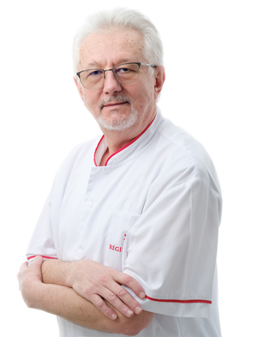
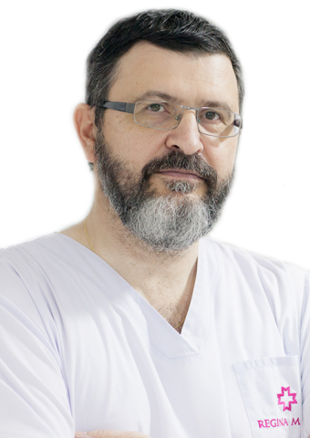
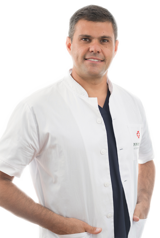
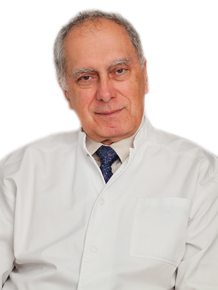
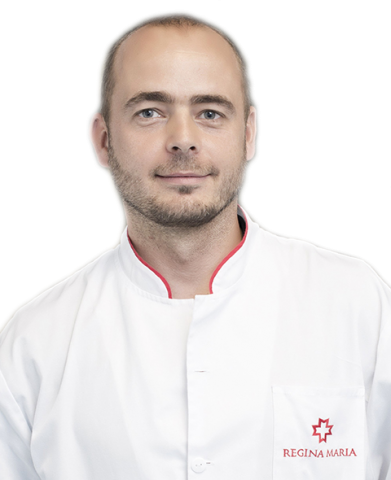

De la ce specialitate doriti sa vedeti doctorii?
Cardiologie
Dr. Sorin Antonescu

Arii de interes medical:
- HTA complicata (renal, cerebral – AVC, etc.)
- Insuficienta cardiaca
- Fibrilatia atriala – anticoagulare
- Boala coronariana ischemica
- Preventie cardiometabolica (diabet zaharat, dislipidemii, etc.)
Membru in societati medicale:
- American Heart and Stroke Association
Dr. Laura Bunduc
Arii de interes medical:
- Ecografie cardiaca
- Ecografie Doppler vasculara periferica
- Test de efort
- Monitorizare ABPM, Holter ekg
Participare la cursuri si congrese:
- 2013-2016: Speaker in diverse simpozioane dedicate medicilor de familie din Botosani si Iasi pe tema HTA si a dislipidemiilor
- Participare anuala la Congresele Nationale de Cardiologie
- Participare anuala Grupurile de lucru In Cardiologie
- 2014: Participare la Congresul European de Ecocardiografi, Sibiu
- Participari la Congresele Nationale de Medicina Interna
Chirurgie
Conf. Univ. Dr. Dan Ulmeanu

Competente:
- Chirurgie laparoscopica
- Chirurgie toracoscopica
- Endoscopie bronsica
Premii:
- Premiul Rhone-Poulenc Rorer
- Diploma de merit – Societatea Romana de Chirurgie Toracica
Dr. Octavian Arnautu

Arii de interes medical:
- Chirurgie digestiva oncologica
- Chirurgie digestiva pentru patologie benigna
- Chirurgie parietala
- Montare camere implantabile pentru chimioterapie
Membru in societati medicale:
- Membru al Asociatiei Romane de Chirurgie Endoscopica
- Membru al European Association of Endoscopic Surgery
Endocrinologie
Dr. Elena Bobeica
Competente:
- Densitometrie osoasa clinica
Arii de interes medical:
- Noduli tiroidieni si disfunctii tiroidiene
- Patologie hipotalamo–hipofizara
- Hiperparatiroidism primar si secundar
- Hipertensiunea endocrina
- Osteoporoza
Hematologie
Dr. Simona Avram
Activitate organizatorica:
- Organizarea si coordonarea laboratorului de Hemostaza al Clinicii de Hematologie Coltea
- Organizarea si coordonarea Departamentului de Hemostaza al laboratoarelor REGINA MARIA
Titluri si activitati stiintifice:
- Membru in Societatea Romana de Hematologie
- Director Executiv al Societatii Romane de Hemostaza si Tromboza
- Membru al International Society of Thrombosis and Hemostasis
- Peer Reviewer of Romanian Review of Laboratory Medicine
- Formator in Managementul Calitatii in Laboratorul Clinic
Neurologie
Prof. Dr. Corneliu Bulboaca

Publicatii:
- ‘Principii de diagnostic clinic neurologic’, Casa Cartii de Stiinta, Cluj-Napoca , 2000
- ‘Patogeneza Accidentului Vascular Cerebral Ischemic’ Echinox, Cluj-Napoca , 2004
- ‘Leukoaraiosis and cardiac performance’ Journal of Neurology, 2007, 254, 148.
Membru:
- Federatia Europeana a Societatilor de Neurologie
- Societatea Internationala de Neuropatologie
- Academia Americana de Neurologie
- Societatea Romana de Neuro-reabilitare
Oftalmologie
Dr. Irina Barca
Competente:
- Perimetrie computerizata (camp vizual)
- Prescriere lentile de contact sferice, torice, multifocale
- Oftalmoscopia indirecta
- Ecografie oculara
- Tonometrie Goldmann
Arii de interes medical:
- Decolarea posterioara de vitros
- Degenerescenta maculara legata de varsta
- Patologia pleoapelor: chalazion, blefarite, tumori benigne, maligne
- Nev pigmentar coroidian, melanom coroidian
- Extractie corp strain cornean
Conf. Univ. Dr. Ion Cijevschi
Numeroase cursuri postuniversitare in tara, printre care:
- Chirurgia cataractei
- Glaucoma
- Implantologie
- Strabologie
Lucrari stiintifice:
- 2013: "Panuvenita.Boala Behcet"
- 2012: "Coroidita serpiginoasa"
Psihologie
Psiholog Andreea Iovita
Arii de interes medical:
- Psihologie clinica
- Psihologia muncii si organizationala
- Psihologia transporturilor si serviciilor
- Psihologia securitatii nationale
Multiple participari la conferinte si workshop-uri:
- 2018: Conferinta Internationa Neurosihologia si Tulburarile de Limbaj
- 2018: Conferinta Internationala ADHD - ul la copii, adolescenti si adulti. Evaluare si metode de interventie
- 2017: Conferinta Internationala- Neuropsihologia tulburarilor specifice de invatare
- 2019: Problemele emotionale si comportamentale ale copiilor si adolescentilor – Actualitatile din DSM 5. Psiholog Dragomirescu Camelia
Radiologie
Dr. Paul Silviu Biris

Arii de interes medical:
- Tomografie Computerizata (CT)
- Imagistica prin Rezonanta Magnetica (IRM) avansata
- Imagistica oncologica, imagistica neurologica si neurochirurgicala
- Imagistica musculoscheletala, Cardiac CT/IRM, AngioCT/IRM
- Imagistica in transplantul renal si hepatic
Cursuri postuniversitare:
- 2005: Anatomie chirurgicala, Universitatea de Medicina si Farmacie, Tg- Mures
- 2006: Tomografie Computerizata (CT), Institutul Clinic Fundeni, Bucuresti
- 2007: Ecografie Doppler, Universitatea de Medicina si Farmacie Iuliu Hatieganu, Cluj Napoca
- 2010: Rezonanta Magnetica, Institutul Clinic Fundeni, Bucuresti
- 2012: Stoller Comprehensive MSK Imaging, Macau, China
- 2016: IRM, Kaufbeuren, Germany